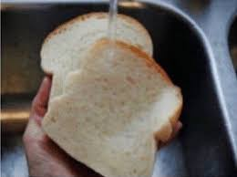

Water Sandwich
Odin Recipes

A quick and easy snack for those low on time and budget!
Ingredients:
- Two Slices of Bread (The type is up to personal preference)
- 250l of Water or Water sourced directly from the tap.
Recipe:
- Get your two slices of Bread and put one on top of the other.
- Either get your 250l of water and pour it ontop of the two slices OR hold both slices out over the sink untill thoroughly soaked.
- You can now enjoy your lovely Water Sandwich!